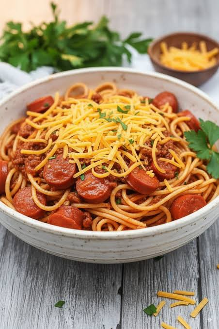

Home
Filipino Style Spaghetti

Filipino spaghetti is a sweet style of pasta made with banana ketchup, sliced red hot dogs, ground meat, and grated cheese on top.
Bright red or orange sweet meat sauce
Sliced bright red hot dogs or sausages mixed in
A generous heap of grated cheddar cheese sprinkled on top
Often served on party platters alongside fried chicken or lumpia
Ingredients Needed
- Pasta: 500g spaghetti noodles
- Meat: 500g ground pork (or beef) and 4-6 pieces of red hot dogs (sliced diagonally)
- Sauce: 1 bottle (approx. 300g) sweet-style spaghetti sauce and 1 cup banana ketchup
- Aromatics: 1 medium onion (minced), 4 cloves garlic (minced)
- Dairy: 1 cup cheddar cheese (grated) and 1/2 cup evaporated milk (optional, for creaminess)
- Seasoning: Cooking oil, salt, black pepper, and 1-2 tablespoons sugar (optional, for extra sweetness)
Step by Step Instructions
-
Cook the Pasta
- Boil water in a large pot with a pinch of salt.
- Cook spaghetti noodles according to package instructions until al dente.
- Drain the water and set the noodles aside.
Sear the Hot Dogs
- Heat cooking oil in a deep pan or wok over medium heat.
- Pan-fry the sliced hot dogs for 2 to 3 minutes until slightly blistered.
- Remove the hot dogs from the pan and set them aside.
Sauté and Brown the Meat
- Using the same pan, sauté the minced onion and garlic until fragrant and translucent.
- Add the ground pork or beef.
- Cook for 7 to 10 minutes until the meat turns brown and the liquid evaporates.
- Drain any excess grease if desired.
Simmer the Sauce
- Pour in the sweet-style spaghetti sauce and banana ketchup.
- Stir well to combine with the meat.
- Bring to a gentle boil, then lower the heat to simmer for 10 minutes.
- Add the fried hot dogs back into the sauce.
- Stir in the evaporated milk and a handful of cheese if you want a creamier base.
- Season with salt, pepper, and sugar according to your taste.
Assemble and Serve
- Place the cooked noodles on a serving platter.
- Pour the warm, sweet meat sauce generously over the top.
- Sprinkle the remaining grated cheddar cheese all over the hot sauce so it melts slightly.